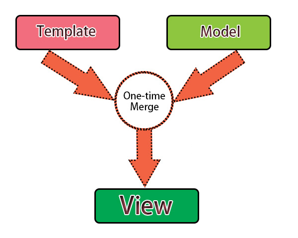
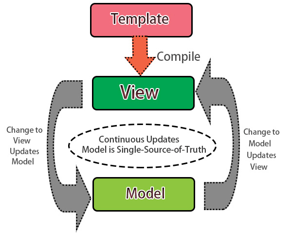

ANGULARJS
Introduction
by Alessandro Rabitti and Marco Cardoso
wifi:
pandnoord / welcomeinpandnoord
#tslangular
Bring in the experts
Marco Cardoso
Senior Frontend Developer at The Secret Lab
@anotherwebstorm
Alessandro Rabitti
Senior Web Developer at The Secret Lab
@silversonicaxel
What is not AngularJS?
- It is not the typical js framework you work with like Zepto, jQuery, Mootools...
- It actually doesn't need any of these frameworks at all!
- It is not a sort of a Plugin or an extension for our browser.
- It doesn't need an amount of code to execute a simple action.
- It doesn't abstract away HTML, CSS or Javascript.
- It's not complex neither difficult to learn.
"A Js Framework
for fast performance web applications."
What is AngularJS?
- A JS framework designed to make your front-end development as easy as possible.
- Expressive, Friendly and Reusable Code.
- Extends your HTML.
- You can REST easily.
- It helps you create easy maintainable single webapps.
- It Was Developed by Google.
- You can start a project within minutes.
Why should we use ANGULARJS?
jQuery VS AngularJS
Goes along nicely with other
frameworks/libraries
- Bootstrap
- Phalcon
- mongoDB
- ExpressJS
- NodeJS
- Laravel
- D3.js
- Ionic
- ...
"it is entirely JavaScript and entirely
client-side, so anywhere JavaScript can run, AngularJS can run"
- Misko Hevery and Adam Abrons, Creators of AngularJS -
One Way Data Binding
Synchronization between model and view components is revolutionary.
Normally template systems has a one way data binding, that let the view to be built from template and model interaction, but then the developer needs to provide code to update view after model data update.

Two Way Data Binding
In Angular templates, the template is compiled on the browser and the view is created, after that any change to the view are propagated to the model, and viceversa.

-
Normal Web Request
First Url request: Response Webpage and Content
Second Url request: Response Webpage and Content
-
ANGULARJS Web Request
First Url request: Response Webpage and Content
Second Url request: Response JSON Data (API)
Controllers
Logic and Behaviour of HTML
Setting up the initial state of the HTML objects
Services
Objects for extra functionalities to Controllers
Built-in and custom
Directives
Markers binding behaviours to HTML
Built-in and custom
Expressive HTML elements
Modules
Main Parts of the application
(not single main but multiple mains)
Manager Containers of the Directives, Controllers, Services, ..
Our Experience with AngularJS
80% magic, 20% struggle
- Internet Explorer. Our Biggest friend.
- SEO? Well, Google announced that they're finally crawling javascript but...
- That's it! Disappointed?...
The future of AngularJS is now!

A small peek on the new AngularJS 2.0
- Compatible with the upcoming web standards and the new ES6 version of JavaScript.
- Moving directives to Web Components which are now becoming the new semantics for HTML.
- Mobile First.
Yes, AngularJS is awesome.
Thanks for noticing that.
Let's hear more about it.